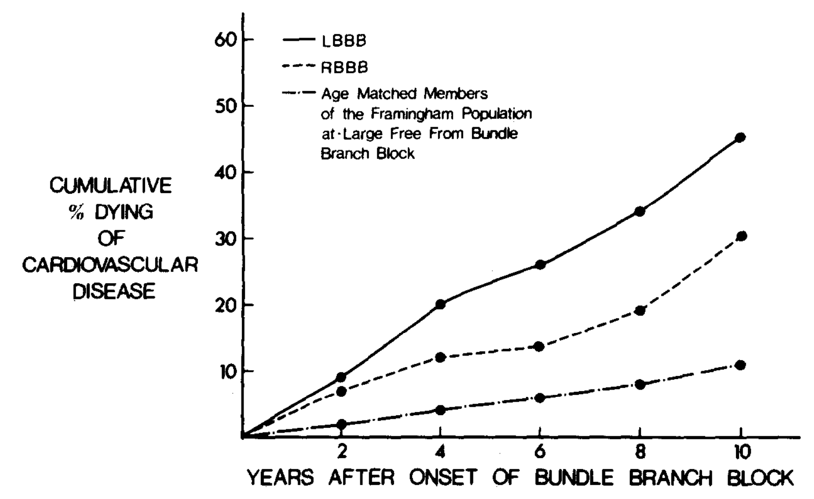
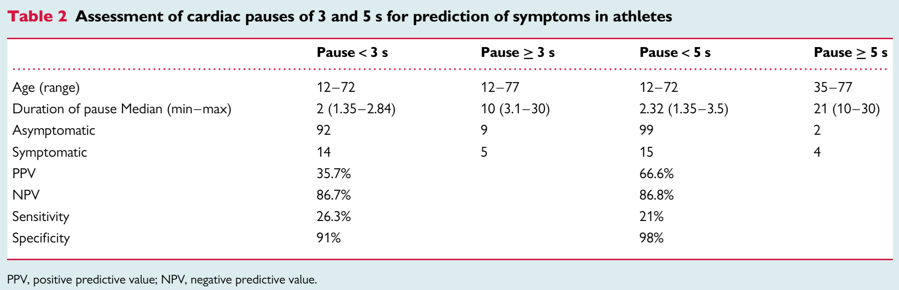

EP-related Guidelines Review
Bradycardia
& conduction delay
AF
Asymptomatic Arrhythmias
HeartRhythmBox
Top
brady
AF
Asymp
2018
ACC/AHA/HRS
Bradycardia and Cardiac Conduction Delay
Look for Sleep Apnea in patients with bradycardia
Sleep
Apnea
Look for Sleep Apnea in patients with bradycardia
Profound bradycardia can be found in Up to 1/3 of patients with OSA.
OSA leads to many CV consequences.
Treating OSA reduces arrhythmias and improves CV outcomes.
Screening and Treating OSA in patients with bradycardia and in those who already had pacemaker are recommended (class I & IIa).
Look for Sleep Apnea in patients with bradycardia
Profound bradycardia can be found in Up to 1/3 of patients with OSA.
OSA leads to many CV consequences.
Treating OSA reduces arrhythmias and improves CV outcomes.
Screening and Treating OSA in patients with bradycardia and in those who already had pacemaker are recommended (class I & IIa).
Get an echo
(at least)
for a new LBBB.

Patients with LBBB have a higher prevalence of both CV and non-CV mortalites.
Transthoracic Echo is recommended (class I) in new LBBB, as well as in high-grade AV block and those whom structural heart diseases are suspected.
Advanced imaging (eg. CT, MRI, or TEE) may be necessary to confirm the diagnosis.
New LBBB: Framingham Data
Echo for
LBBB
Get an echo for a new LBBB.
Patients with LBBB have a higher prevalence of both CV and non-CV mortalites.
Transthoracic Echo is recommended (class I) in new LBBB, as well as in high-grade AV block and those whom structural heart diseases are suspected.
Advanced imaging (eg. CT, MRI, or TEE) may be necessary to confirm the diagnosis.
New LBBB: Framingham Data
In sinus node dysfunction, not all
PAUSES
required a pacemaker.
In sinus node dysfunction, not all
PAUSES
required a pacemaker.

Europace 2016.
It's all about SYMPTOMS CORRELATION.
content
Content